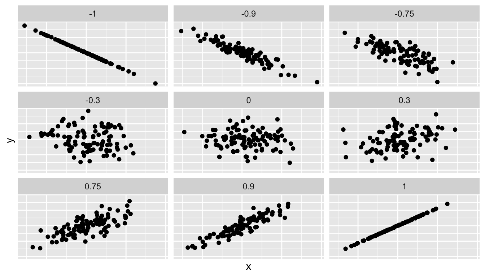
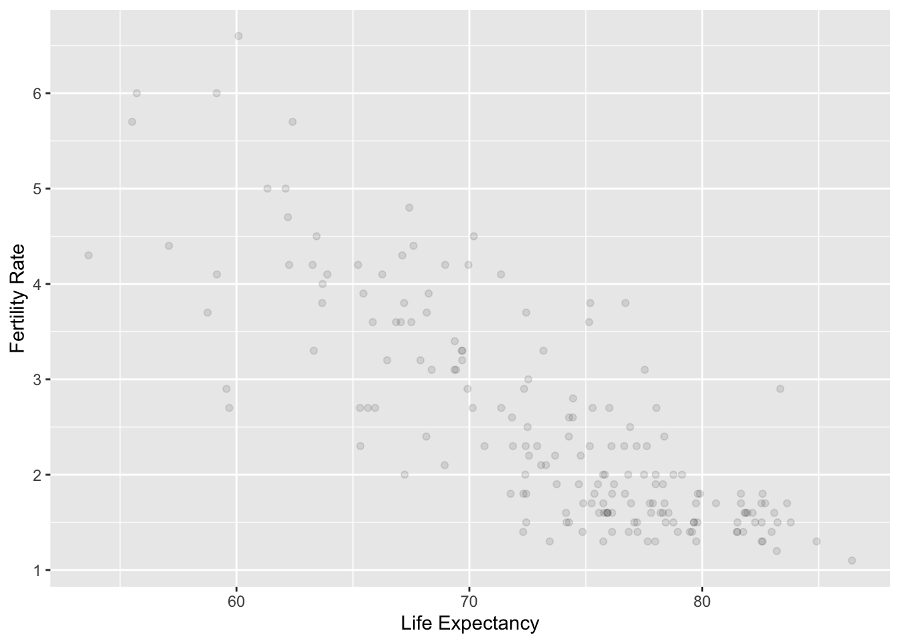
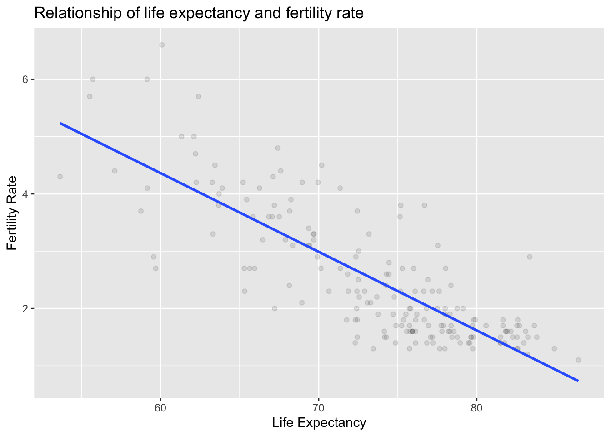
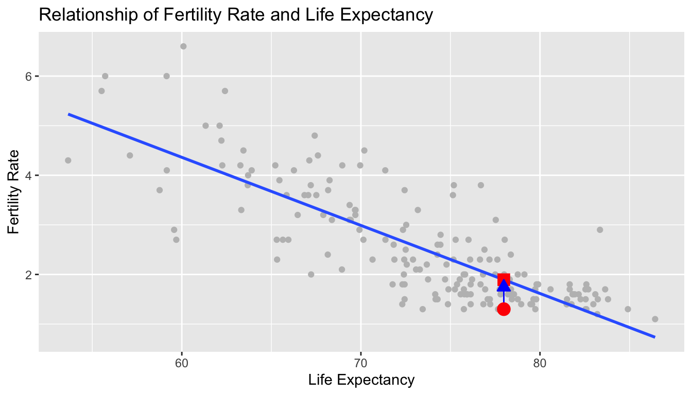
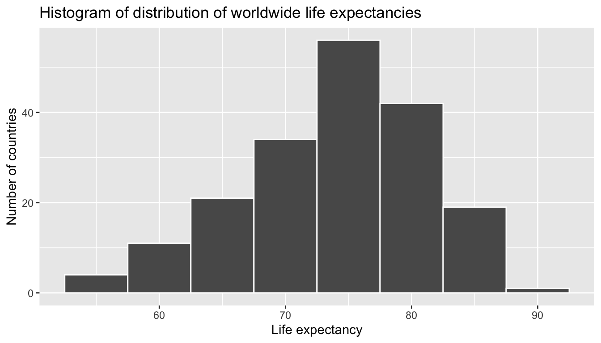
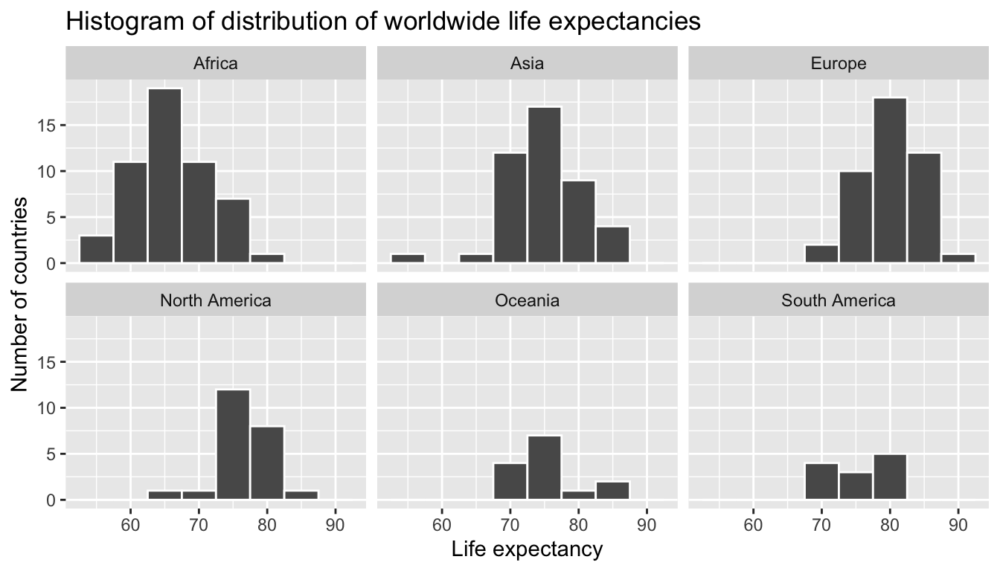
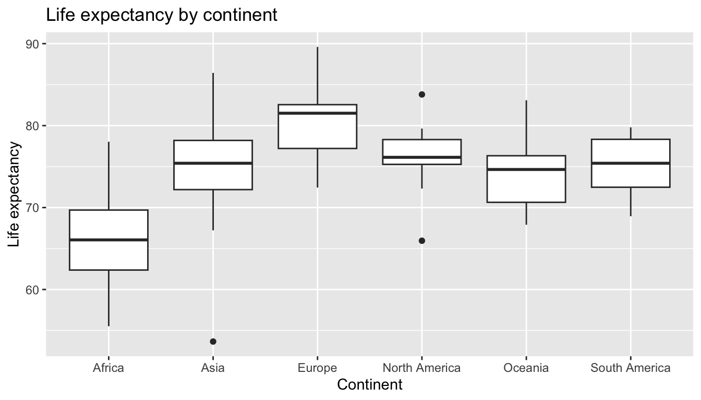
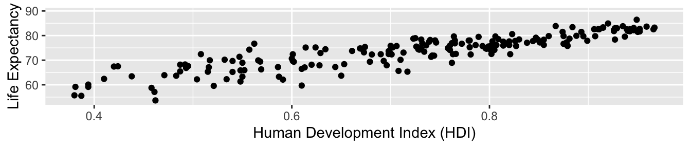
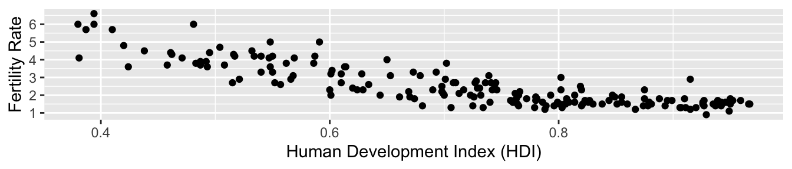
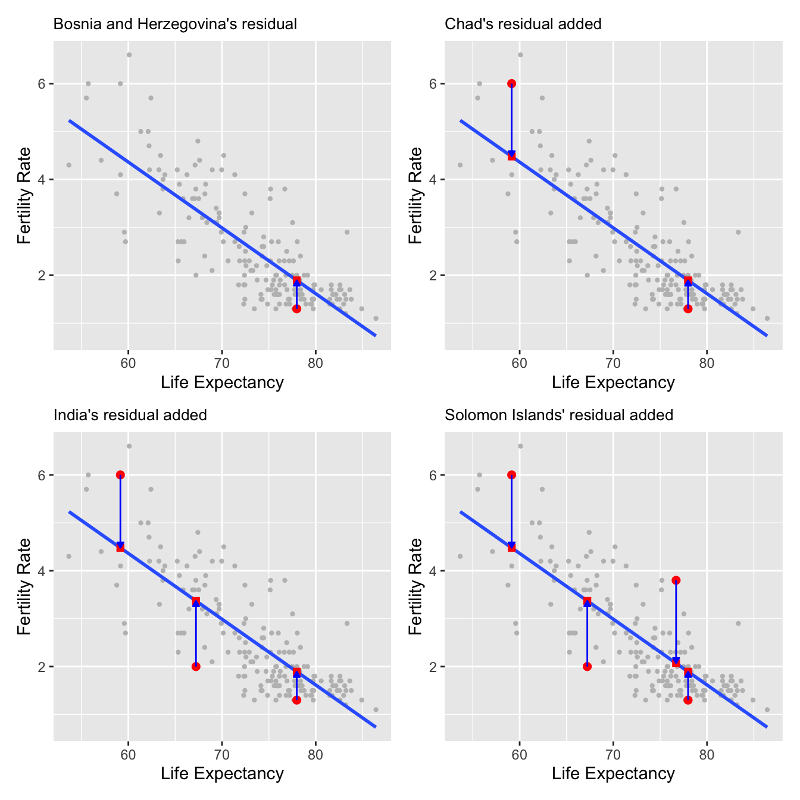

library(tidyverse)
library(moderndive)27 M9A: Basic Regression
This content draws on material from Statistical Inference via Data Science: A ModernDive into R and the Tidyverse [Second Edition] by Chester Ismay, Albert Y. Kim, and Arturo Valdivia licensed under CC BY-NC-SA 4.0
Changes to the source material include addition of new material; light editing; rearranging, removing, and combining original material; adding and changing links; and adding first-person language from current author.
The resulting content is licensed under CC BY-NC-SA 4.0.
27.1 Introduction
Now that we are equipped with skills for wrangling, tidying, and visualizing data, let’s proceed with data modeling. As I stated at the end of this week’s understanding reading, this walkthrough is going to repeat much of what we read there, though this focus on modeling—and practical application of data science—will give us a new way of thinking about it.
In this chapter, we work with regression, a method that helps us study the relationship between an outcome variable or response and one or more explanatory variables or regressors. The method starts by proposing a statistical model. Data is then collected and used to estimate the coefficients or parameters for the model, and these results are typically used for two purposes:
- For explanation when we want to describe how changes in one or more of the regressors are associated with changes in the response, quantify those changes, establish which of the regressors truly have an association with the response, or determine whether the model used to describe the relationship between the response and the explanatory variables seems appropriate.
- For prediction when we want to determine, based on the observed values of the regressors, what will the value of the response be? We are not concerned about how all the regressors relate and interact with one another or with the response, we simply want as good predictions as possible.
As an illustration, assume that we want to study the relationship between blood pressure and potential risk factors such as daily salt intake, age, and physical activity levels. The response is blood pressure, and the regressors are the risk factors.
If we use linear regression for explanation, we may want to determine whether reducing daily salt intake has a real effect on lowering blood pressure, or by how much blood pressure decreases if an individual reduces their salt intake by half.
This information may help target individuals of a specific age group with advice on dietary changes to manage blood pressure.
On the other hand, if we use linear regression for prediction, we would like to determine, as accurately as possible, the blood pressure of a given individual based on the data collected about their salt intake, age, and physical activity levels. In this chapter, we will use linear regression for explanation.
The most basic and commonly-used type of regression is linear regression. Linear regression involves a numerical response and one or more regressors that can be numerical or categorical. It is called linear regression because the statistical model that describes the relationship between the expected response and the regressors is assumed to be linear. In particular, when the model has a single regressor, the linear regression is the equation of a line. Linear regression is the foundation for almost any other type of regression or related method.
We begin with regression with a single explanatory variable. We also introduce the correlation coefficient, discuss “correlation versus causation,” and determine whether the model fits the data observed.
Needed packages
load all the packages needed for this chapter (this assumes you’ve already installed them). In this chapter, we introduce some new packages:
- The
tidyverse“umbrella” package. Recall from our discussion in Section Section 18.4 that loading thetidyversepackage by runninglibrary(tidyverse)loads the following commonly used data science packages all at once:ggplot2for data visualizationdplyrfor data wranglingtidyrfor converting data to “tidy” formatreadrfor importing spreadsheet data into R- As well as the more advanced
purrr,tibble,stringr, andforcatspackages
- The
moderndivepackage of datasets and functions for tidyverse-friendly introductory linear regression as well as a data frame summary function.
If needed, read Section Section 6.3 for information on how to install and load R packages.
27.2 One numerical explanatory variable
Before we introduce the model needed for simple linear regression, we present an example. Why do some countries exhibit high fertility rates while others have significantly lower ones? Are there correlations between fertility rates and life expectancy across different continents and nations? Could underlying socioeconomic factors be influencing these trends?
These are all questions that are of interest to demographers and policy makers, as understanding fertility rates is important for planning and development. By analyzing the dataset of UN member states, which includes variables such as country codes (ISO), fertility rates, and life expectancy for 2022, researchers can uncover patterns and make predictions about fertility rates based on life expectancy.
In this section, we aim to explain differences in fertility rates as a function of one numerical variable: life expectancy. Could it be that countries with higher life expectancy also have lower fertility rates? Could it be instead that countries with higher life expectancy tend to have higher fertility rates? Or could it be that there is no relationship between life expectancy and fertility rates? We answer these questions by modeling the relationship between fertility rates and life expectancy using simple linear regression where we have:
- A numerical outcome variable \(y\) (the country’s fertility rate) and
- A single numerical explanatory variable \(x\) (the country’s life expectancy).
27.2.1 Exploratory data analysis
The data on the 193 current UN member states (as of 2024) can be found in the un_member_states_2024 data frame included in the moderndive package. However, to keep things simple we include only those rows that don’t have missing data with na.omit() and select() only the subset of the variables we’ll consider in this chapter, and save this data in a new data frame called UN_data_m9:
UN_data_m9 <- un_member_states_2024 |>
select(iso,
life_exp = life_expectancy_2022,
fert_rate = fertility_rate_2022,
obes_rate = obesity_rate_2016)|>
na.omit()A crucial step before doing any kind of analysis or modeling is performing an exploratory data analysis, or EDA for short. EDA gives you a sense of the distributions of the individual variables in your data, whether any potential relationships exist between variables, whether there are outliers and/or missing values, and (most importantly) how to build your model. Here are three common steps in an EDA:
- Most crucially, looking at the raw data values.
- Computing summary statistics, such as means, medians, and maximums.
- Creating data visualizations.
We perform the first common step in an exploratory data analysis: looking at the raw data values. Because this step seems so trivial, unfortunately many data analysts ignore it. However, getting an early sense of what your raw data looks like can often prevent many larger issues down the road.
You can do this by using RStudio’s spreadsheet viewer or by using the glimpse() function as introduced in Subsection Section 6.4.3 on exploring data frames:
glimpse(UN_data_m9)Rows: 181
Columns: 4
$ iso <chr> "AFG", "ALB", "DZA", "AGO", "ATG", "ARG", "ARM", "AUS", "AUT…
$ life_exp <dbl> 53.6, 79.5, 78.0, 62.1, 77.8, 78.3, 76.1, 83.1, 82.3, 74.2, …
$ fert_rate <dbl> 4.3, 1.4, 2.7, 5.0, 1.6, 1.9, 1.6, 1.6, 1.5, 1.6, 1.4, 1.8, …
$ obes_rate <dbl> 5.5, 21.7, 27.4, 8.2, 18.9, 28.3, 20.2, 29.0, 20.1, 19.9, 31…Observe that Rows: 181 indicates that there are 181 rows/observations in UN_data_m9 after filtering out the missing values, where each row corresponds to one observed country/member state. It is important to note that the observational unit is an individual country. Recall from Subsection Section 6.4.3 that the observational unit is the “type of thing” that is being measured by our variables.
A full description of all the variables included in un_member_states_2024 can be found by reading the associated help file (run ?un_member_states_2024 in the console). Let’s describe only the 4 variables we selected in UN_data_m9:
iso: An identification variable used to distinguish between the 181 countries in the filtered dataset.fert_rate: A numerical variable representing the country’s fertility rate in 2022 corresponding to the expected number of children born per woman in child-bearing years. This is the outcome variable \(y\) of interest.life_exp: A numerical variable representing the country’s average life expectancy in 2022 in years. This is the primary explanatory variable \(x\) of interest.obes_rate: A numerical variable representing the country’s obesity rate in 2016. This will be another explanatory variable \(x\) that we use in the Learning check at the end of this subsection.
An alternative way to look at the raw data values is by choosing a random sample of the rows in UN_data_m9 by piping it into the slice_sample() function from the dplyr package. Here we set the n argument to be 5, indicating that we want a random sample of 5 rows. We display the results in Table Table 27.1. Note that due to the random nature of the sampling, you will likely end up with a different subset of 5 rows.
UN_data_m9 |>
slice_sample(n = 5)| iso | life_exp | fert_rate | obes_rate |
|---|---|---|---|
| PRT | 81.5 | 1.4 | 20.8 |
| MNE | 77.8 | 1.7 | 23.3 |
| CPV | 73.8 | 1.9 | 11.8 |
| VNM | 75.5 | 1.9 | 2.1 |
| IDN | 73.1 | 2.1 | 6.9 |
We have looked at the raw values in our UN_data_m9 data frame and got a preliminary sense of the data. We can now compute summary statistics. We start by computing the mean and median of our numerical outcome variable fert_rate and our numerical explanatory variable life_exp. We do this by using the summarize() function from dplyr along with the mean() and median() summary functions we saw in Section Section 24.2.
UN_data_m9 |>
summarize(mean_life_exp = mean(life_exp),
mean_fert_rate = mean(fert_rate),
median_life_exp = median(life_exp),
median_fert_rate = median(fert_rate))| mean_life_exp | mean_fert_rate | median_life_exp | median_fert_rate |
|---|---|---|---|
| 73.6 | 2.5 | 75.1 | 2 |
However, what if we want other summary statistics as well, such as the standard deviation (a measure of spread), the minimum and maximum values, and various percentiles?
Typing all these summary statistic functions in summarize() would be long and tedious. Instead, we use the convenient tidy_summary() function in the moderndive package. This function takes in a data frame, summarizes it, and returns commonly used summary statistics in tidy format. We take our UN_data_m9 data frame, select() only the outcome and explanatory variables fert_rate and life_exp, and pipe them into the tidy_summary function:
UN_data_m9 |>
select(fert_rate, life_exp) |>
tidy_summary()| column | n | group | type | min | Q1 | mean | median | Q3 | max | sd |
|---|---|---|---|---|---|---|---|---|---|---|
| fert_rate | 181 | numeric | 1.1 | 1.6 | 2.5 | 2.0 | 3.2 | 6.6 | 1.15 | |
| life_exp | 181 | numeric | 53.6 | 69.4 | 73.6 | 75.1 | 78.3 | 86.4 | 6.80 |
We can also do this more directly by providing which columns we’d like a summary of inside the tidy_summary() function:
UN_data_m9 |>
tidy_summary(columns = c(fert_rate, life_exp))| column | n | group | type | min | Q1 | mean | median | Q3 | max | sd |
|---|---|---|---|---|---|---|---|---|---|---|
| fert_rate | 181 | numeric | 1.1 | 1.6 | 2.5 | 2.0 | 3.2 | 6.6 | 1.15 | |
| life_exp | 181 | numeric | 53.6 | 69.4 | 73.6 | 75.1 | 78.3 | 86.4 | 6.80 |
Both return the same results for the numerical variables fert_rate and life_exp:
column: the name of the column being summarizedn: the number of non-missing valuesgroup:NA(missing) for numerical columns, but will break down a categorical variable into its levelstype: which type of column is it (numeric,character,factor, orlogical)min: the minimum valueQ1: the 1st quartile: the value at which 25% of observations are smaller than it (the 25th percentile)mean: the average value for measuring central tendencymedian: the 2nd quartile: the value at which 50% of observations are smaller than it (the 50th percentile)Q3: the 3rd quartile: the value at which 75% of observations are smaller than it (the 75th percentile)max: the maximum valuesd: the standard deviation value for measuring spread
Looking at this output, we can see how the values of both variables distribute. For example, the median fertility rate was 2, whereas the median life expectancy was 75.14 years. The middle 50% of fertility rates was between 1.6 and 3.2 (the first and third quartiles), and the middle 50% of life expectancies was from 69.36 to 78.31.
The tidy_summary() function only returns what are known as univariate summary statistics: functions that take a single variable and return some numerical summary of that variable. However, there also exist bivariate summary statistics: functions that take in two variables and return some summary of those two variables.
In particular, when the two variables are numerical, we can compute the correlation coefficient. Generally speaking, coefficients are quantitative expressions of a specific phenomenon. A correlation coefficient measures the strength of the linear relationship between two numerical variables. Its value goes from -1 and 1 where:
- -1 indicates a perfect negative relationship: As one variable increases, the value of the other variable tends to go down, following a straight line.
- 0 indicates no relationship: The values of both variables go up/down independently of each other.
- +1 indicates a perfect positive relationship: As the value of one variable goes up, the value of the other variable tends to go up as well in a linear fashion.
Figure Figure 27.1 gives examples of nine different correlation coefficient values for hypothetical numerical variables \(x\) and \(y\).

For example, observe in the top right plot that for a correlation coefficient of -0.75 there is a negative linear relationship between \(x\) and \(y\), but it is not as strong as the negative linear relationship between \(x\) and \(y\) when the correlation coefficient is -0.9 or -1.
The correlation coefficient can be computed using the get_correlation() function in the moderndive package. In this case, the inputs to the function are the two numerical variables for which we want to calculate the correlation coefficient.
We put the name of the outcome variable on the left-hand side of the ~ “tilde” sign, while putting the name of the explanatory variable on the right-hand side. This is known as R’s formula notation. We will use this same “formula” syntax with regression later in this chapter.
UN_data_m9 |>
get_correlation(formula = fert_rate ~ life_exp)# A tibble: 1 × 1
cor
<dbl>
1 -0.812An alternative way to compute correlation is to use the cor() summary function within a summarize():
UN_data_m9 |>
summarize(correlation = cor(fert_rate, life_exp))In our case, the correlation coefficient of -0.812 indicates that the relationship between fertility rate and life expectancy is “moderately negative.” There is a certain amount of subjectivity in interpreting correlation coefficients, especially those that are not close to the extreme values of -1, 0, and 1.
We now perform the last step in EDA: creating data visualizations. Since both the fert_rate and life_exp variables are numerical, a scatterplot is an appropriate graph to visualize this data. We do this using geom_point() and display the result in Figure Figure 27.2. Furthermore, we set the alpha value to 0.1 to check for any overplotting.
ggplot(UN_data_m9,
aes(x = life_exp, y = fert_rate)) +
geom_point(alpha = 0.1) +
labs(x = "Life Expectancy", y = "Fertility Rate")
We do not see much for overplotting due to little to no overlap in the points. Most life expectancy entries appear to fall between 70 and 80 years, while most fertility rate entries fall between 1.5 and 3.5 births. Furthermore, while opinions may vary, it is our opinion that the relationship between fertility rate and life expectancy is “moderately negative.” This is consistent with our earlier computed correlation coefficient of -0.812.
We build on the scatterplot in Figure Figure 27.2 by adding a “best-fitting” line: of all possible lines we can draw on this scatterplot, it is the line that “best” fits through the cloud of points. We do this by adding a new geom_smooth(method = "lm", se = FALSE) layer to the ggplot() code that created the scatterplot in Figure Figure 27.2. The method = "lm" argument sets the line to be a “linear model.” The se = FALSE argument suppresses standard error uncertainty bars. (We’ll define the concept of standard error later.)
ggplot(UN_data_m9, aes(x = life_exp, y = fert_rate)) +
geom_point(alpha = 0.1) +
labs(x = "Life Expectancy",
y = "Fertility Rate",
title = "Relationship of life expectancy and fertility rate") +
geom_smooth(method = "lm", se = FALSE)
The line in the resulting Figure Figure 27.3 is called a “regression line.” The regression line is a visual summary of the relationship between two numerical variables, in our case the outcome variable fert_rate and the explanatory variable life_exp. The negative slope of the blue line is consistent with our earlier observed correlation coefficient of -0.812 suggesting that there is a negative relationship between these two variables: as a country’s population has higher life expectancy it tends to have a lower fertility rate. We’ll see later, however, that while the correlation coefficient and the slope of a regression line always have the same sign (positive or negative), they typically do not have the same value.
Furthermore, a regression line is “best-fitting” in that it minimizes some mathematical criteria. We present these mathematical criteria in Subsection Section 27.4.2, but we suggest you read this subsection only after first reading the rest of this section on regression with one numerical explanatory variable.
27.2.2 Simple linear regression
You may recall from secondary/high school algebra that the equation of a line is \(y = a + b\cdot x\). (Note that the \(\cdot\) symbol is equivalent to the \(\times\) “multiply by” mathematical symbol. We’ll use the \(\cdot\) symbol in the rest of this book as it is more succinct.) It is defined by two coefficients \(a\) and \(b\). The intercept coefficient \(a\) is the value of \(y\) when \(x = 0\). The slope coefficient \(b\) for \(x\) is the increase in \(y\) for every increase of one in \(x\). This is also called the “rise over run.”
However, when defining a regression line like the one in Figure Figure 27.3, we use slightly different notation: the equation of the regression line is \(\widehat{y} = b_0 + b_1 \cdot x\) . The intercept coefficient is \(b_0\), so \(b_0\) is the value of \(\widehat{y}\) when \(x = 0\). The slope coefficient for \(x\) is \(b_1\), i.e., the increase in \(\widehat{y}\) for every increase of one in \(x\). Why do we put a “hat” on top of the \(y\)? It’s a form of notation commonly used in regression to indicate that we have a “fitted value,” or the value of \(y\) on the regression line for a given \(x\) value as discussed further in Subsection Section 27.2.3.
We know that the regression line in Figure Figure 27.3 has a negative slope \(b_1\) corresponding to our explanatory \(x\) variable life_exp. Why? Because as countries tend to have higher life_exp values, they tend to have lower fert_rate values. However, what is the numerical value of the slope \(b_1\)? What about the intercept \(b_0\)? We do not compute these two values by hand, but rather we use a computer!
We can obtain the values of the intercept \(b_0\) and the slope for life_exp \(b_1\) by outputting the linear regression coefficients. This is done in two steps:
- We first “fit” the linear regression model using the
lm()function and save it indemographics_model. - We get the regression coefficients by applying
coef()todemographics_model.
# Fit regression model:
demographics_model <- lm(fert_rate ~ life_exp, data = UN_data_m9)
# Get regression coefficients
coef(demographics_model)We first focus on interpreting the regression coefficients, and later revisit the code that produced it. The coefficients are the intercept \(b_0 = 12.599\) and the slope \(b_1 = -0.137\) for life_exp. Thus the equation of the regression line in Figure Figure 27.3 follows:
\[ \begin{aligned} \widehat{y} &= b_0 + b_1 \cdot x\\ \widehat{\text{fertility}\_\text{rate}} &= b_0 + b_{\text{life}\_\text{expectancy}} \cdot \text{life}\_\text{expectancy}\\ &= 12.599 + (-0.137) \cdot \text{life}\_\text{expectancy} \end{aligned} \]
The intercept \(b_0\) = 12.599 is the average fertility rate \(\widehat{y}\) = \(\widehat{\text{fertility}\_\text{rate}}\) for those countries that had a life_exp of 0. Or in graphical terms, where the line intersects the \(y\) axis for \(x\) = 0. Note, however, that while the intercept of the regression line has a mathematical interpretation, it has no practical interpretation here, since observing a life_exp of 0 is impossible. Furthermore, looking at the scatterplot with the regression line in Figure Figure 27.3, no countries had a life expectancy anywhere near 0.
Of greater interest is the slope \(b_{\text{life}\_\text{expectancy}}\) for life_exp of -0.137. This summarizes the relationship between the fertility rate and life expectancy variables. Note that the sign is negative, suggesting a negative relationship between these two variables. This means countries with higher life expectancies tend to have lower fertility rates. Recall that the correlation coefficient is -0.812. They both have the same negative sign, but have a different value. Recall also that the correlation’s interpretation is the “strength of linear association.” The slope’s interpretation is a little different:
For every increase of 1 unit in
life_exp, there is an associated decrease of, on average, 0.137 units offert_rate.
We only state that there is an associated increase and not necessarily a causal increase. Perhaps it may not be that higher life expectancies directly cause lower fertility rates. Instead, wealthier countries could tend to have stronger educational backgrounds, improved health, a higher standard of living, and have lower fertility rates, while at the same time these wealthy countries also tend to have higher life expectancies. Just because two variables are strongly associated, it does not necessarily mean that one causes the other. This is summed up in the often-quoted phrase, “correlation is not necessarily causation.” We discuss this idea further in Subsection Section 27.4.1.
Furthermore, we say that this associated decrease is on average 0.137 units of fert_rate, because you might have two countries whose life_exp values differ by 1 unit, but their difference in fertility rates may not be exactly \(-0.137\). What the slope of \(-0.137\) is saying is that across all possible countries, the average difference in fertility rate between two countries whose life expectancies differ by one is \(-0.137\).
Now that we have learned how to compute the equation for the regression line in Figure Figure 27.3 using the model coefficient values and how to interpret the resulting intercept and slope, we revisit the code that generated these coefficients:
# Fit regression model:
demographics_model <- lm(fert_rate ~ life_exp, data = UN_data_m9)
# Get regression coefficients:
coef(demographics_model)First, we “fit” the linear regression model to the data using the lm() function and save this as demographics_model. When we say “fit,” we mean “find the best fitting line to this data.” lm() stands for “linear model” and is used as lm(y ~ x, data = df_name) where:
yis the outcome variable, followed by a tilde~. In our case,yis set tofert_rate.xis the explanatory variable. In our case,xis set tolife_exp.- The combination of
y ~ xis called a model formula. (Note the order ofyandx.) In our case, the model formula isfert_rate ~ life_exp. We saw such model formulas earlier with theget_correlation()function in Subsection Section 27.2.1. df_nameis the name of the data frame that contains the variablesyandx. In our case,datais theUN_data_m9data frame.
Second, we take the saved model in demographics_model and apply the coef() function to it to obtain the regression coefficients. This gives us the components of the regression equation line: the intercept \(b_0\) and the slope \(b_1\).
27.2.3 Observed/fitted values and residuals
We just saw how to get the value of the intercept and the slope of a regression line from the output of the coef() function. Now instead say we want information on individual observations. For example, we focus on the 21st of the 181 countries in the UN_data_m9 data frame in Table Table 27.2. This corresponds to the UN member state of Bosnia and Herzegovina (BIH).
| iso | life_exp | fert_rate | obes_rate |
|---|---|---|---|
| BIH | 78 | 1.3 | 17.9 |
What is the value \(\widehat{y}\) on the regression line corresponding to this country’s life_exp value of 77.98? In Figure Figure 27.4 we mark three values corresponding to these results for Bosnia and Herzegovina and give their statistical names:
- Circle: The observed value \(y\) = 1.3 is this country’s actual fertility rate.
- Square: The fitted value \(\widehat{y}\) is the value on the regression line for \(x = \texttt{life\_exp} = 77.98\), computed with the intercept and slope in the previous regression table:
\[\widehat{y} = b_0 + b_1 \cdot x = 12.599 + (-0.137) \cdot 77.98 = 1.894\] * Arrow: The length of this arrow is the residual and is computed by subtracting the fitted value \(\widehat{y}\) from the observed value \(y\). The residual can be thought of as a model’s error or “lack of fit” for a particular observation. In the case of this country, it is \(y - \widehat{y} = 1.3 - 1.894 = -0.594\).

Now say we want to compute both the fitted value \(\widehat{y} = b_0 + b_1 \cdot x\) and the residual \(y - \widehat{y}\) for all 181 UN member states with complete data as of 2024. Recall that each country corresponds to one of the 181 rows in the UN_data_m9 data frame and also one of the 181 points in the regression plot in Figure Figure 27.4.
We could repeat the previous calculations we performed by hand 181 times, but that would be tedious and time consuming. Instead, we use a computer with the get_regression_points() function. We apply the get_regression_points() function to demographics_model, which is where we saved our lm() model in the previous section. In Table Table 27.3 we present the results of only the 21st through 24th courses for brevity.
regression_points <- get_regression_points(demographics_model)
regression_points| ID | fert_rate | life_exp | fert_rate_hat | residual |
|---|---|---|---|---|
| 21 | 1.3 | 78.0 | 1.89 | -0.594 |
| 22 | 2.7 | 65.6 | 3.59 | -0.888 |
| 23 | 1.6 | 75.9 | 2.18 | -0.576 |
| 24 | 1.7 | 80.6 | 1.53 | 0.165 |
This function is an example of what is known in computer programming as a wrapper function. It takes other pre-existing functions and “wraps” them into a single function that hides its inner workings. This concept is illustrated in Figure Figure 27.5.

So all you need to worry about is what the inputs look like and what the outputs look like; you leave all the other details “under the hood of the car.” In our regression modeling example, the get_regression_points() function takes a saved lm() linear regression model as input and returns a data frame of the regression predictions as output. If you are interested in learning more about the get_regression_points() function’s inner workings, check out Subsection Section 27.4.3.
We inspect the individual columns and match them with the elements of Figure Figure 27.4:
- The
fert_ratecolumn represents the observed outcome variable \(y\). This is the y-position of the 181 black points. - The
life_expcolumn represents the values of the explanatory variable \(x\). This is the x-position of the 181 black points. - The
fert_rate_hatcolumn represents the fitted values \(\widehat{y}\). This is the corresponding value on the regression line for the 181 \(x\) values. - The
residualcolumn represents the residuals \(y - \widehat{y}\). This is the 181 vertical distances between the 181 black points and the regression line.
Just as we did for the 21st country in the UN_data_m9 dataset (in the first row of the table), we repeat the calculations for the 24th country (in the fourth row of Table Table 27.3). This corresponds to the country of Brunei (BRN):
fert_rate\(= 1.7\) is the observedfert_rate\(y\) for this country.life_exp\(= 80.590\) is the value of the explanatory variablelife_exp\(x\) for Brunei.fert_rate_hat\(= 1.535 = 12.599 + (-0.137) \cdot 80.590\) is the fitted value \(\widehat{y}\) on the regression line for this country.residual\(= 0.165 = 1.7 - 1.535\) is the value of the residual for this country. In other words, the model’s fitted value was off by 0.165 fertility rate units for Brunei.
If you like, you can skip ahead to Subsection Section 27.4.2 to learn about the processes behind what makes “best-fitting” regression lines. As a primer, a “best-fitting” line refers to the line that minimizes the sum of squared residuals out of all possible lines we can draw through the points. In Section Section 27.3, we’ll discuss another common scenario of having a categorical explanatory variable and a numerical outcome variable.
27.3 One categorical explanatory variable
It is an unfortunate truth that life expectancy is not the same across all countries in the world. International development agencies are interested in studying these differences in life expectancy in the hopes of identifying where governments should allocate resources to address this problem. In this section, we explore differences in life expectancy in two ways:
- Differences between continents: Are there significant differences in average life expectancy between the six populated continents of the world: Africa, North America, South America, Asia, Europe, and Oceania?
- Differences within continents: How does life expectancy vary within the world’s five continents? For example, is the spread of life expectancy among the countries of Africa larger than the spread of life expectancy among the countries of Asia?
To answer such questions, we use an updated version of the gapminder data frame we visualized in Figure Figure 21.1 in Subsection Section 21.2.2 on the grammar of graphics. This updated un_member_states_2024 data we saw earlier in this chapter. It is included in the moderndive package and has international development statistics such as life expectancy, GDP per capita, and population for 193 countries for years near 2024. We use this data for basic regression again, but now using an explanatory variable \(x\) that is categorical, as opposed to the numerical explanatory variable model we used in the previous Section Section 27.2:
- A numerical outcome variable \(y\) (a country’s life expectancy) and
- A single categorical explanatory variable \(x\) (the continent that the country is a part of).
When the explanatory variable \(x\) is categorical, the concept of a “best-fitting” regression line is a little different than the one we saw previously in Section Section 27.2 where the explanatory variable \(x\) was numerical. We study these differences shortly in Subsection Section 27.3.2, but first we conduct an exploratory data analysis.
27.3.1 Exploratory data analysis
The data on the 193 countries can be found in the un_member_states_2024 data frame included in the moderndive package. However, to keep things simple, we select() only the subset of the variables we’ll consider in this chapter and focus only on rows where we have no missing values with na.omit(). We’ll save this data in a new data frame called gapminder2022:
gapminder2022 <- un_member_states_2024 |>
select(country, life_exp = life_expectancy_2022, continent, gdp_per_capita) |>
na.omit()We perform the first common step in an exploratory data analysis: looking at the raw data values. You can do this by using RStudio’s spreadsheet viewer or by using the glimpse() command as introduced in Subsection Section 6.4.3 on exploring data frames:
glimpse(gapminder2022)Rows: 188
Columns: 4
$ country <chr> "Afghanistan", "Albania", "Algeria", "Andorra", "Angola…
$ life_exp <dbl> 53.6, 79.5, 78.0, 83.4, 62.1, 77.8, 78.3, 76.1, 83.1, 8…
$ continent <fct> Asia, Europe, Africa, Europe, Africa, North America, So…
$ gdp_per_capita <dbl> 356, 6810, 4343, 41993, 3000, 19920, 13651, 7018, 65100…Observe that Rows: 188 indicates that there are 188 rows/observations in gapminder2022, where each row corresponds to one country. In other words, the observational unit is an individual country. Furthermore, observe that the variable continent is of type <fct>, which stands for factor, which is R’s way of encoding categorical variables.
A full description of all the variables included in un_member_states_2024 can be found by reading the associated help file (run ?un_member_states_2024 in the console). However, we fully describe only the 4 variables we selected in gapminder2022:
country: An identification variable of type character/text used to distinguish the 188 countries in the dataset.life_exp: A numerical variable of that country’s life expectancy at birth. This is the outcome variable \(y\) of interest.continent: A categorical variable with five levels. Here “levels” correspond to the possible categories: Africa, Asia, Americas, Europe, and Oceania. This is the explanatory variable \(x\) of interest.gdp_per_capita: A numerical variable of that country’s GDP per capita in US inflation-adjusted dollars that we’ll use as another outcome variable \(y\) in the Learning check at the end of this subsection.
We next look at a random sample of three out of the 188 countries in Table Table 27.4.
gapminder2022 |> sample_n(size = 3)| country | life_exp | continent | gdp_per_capita |
|---|---|---|---|
| Panama | 77.6 | North America | 17358 |
| Micronesia, Federated States of | 74.4 | Oceania | 3714 |
| Burundi | 67.4 | Africa | 259 |
Random sampling will likely produce a different subset of 3 rows for you than what’s shown. Now that we have looked at the raw values in our gapminder2022 data frame and got a sense of the data, we compute summary statistics. We again apply tidy_summary() from the moderndive package. Recall that this function takes in a data frame, summarizes it, and returns commonly used summary statistics. We take our gapminder2022 data frame, select() only the outcome and explanatory variables life_exp and continent, and pipe them into tidy_summary() in Table Table 27.5:
gapminder2022 |> select(life_exp, continent) |> tidy_summary()| column | n | group | type | min | Q1 | mean | median | Q3 | max | sd |
|---|---|---|---|---|---|---|---|---|---|---|
| life_exp | 188 | numeric | 53.6 | 69.4 | 73.8 | 75.2 | 78.4 | 89.6 | 6.93 | |
| continent | 52 | Africa | factor | |||||||
| continent | 44 | Asia | factor | |||||||
| continent | 43 | Europe | factor | |||||||
| continent | 23 | North America | factor | |||||||
| continent | 14 | Oceania | factor | |||||||
| continent | 12 | South America | factor |
The tidy_summary() output now reports summaries for categorical variables and for the numerical variables we reviewed before. Let’s focus just on discussing the results for the categorical factor variable continent:
n: The number of non-missing entries for each groupgroup: Breaks down a categorical variable into its unique levels. For this variable, it is corresponding to Africa, Asia, North and South America, Europe, and Oceania.type: The data type of the variable. Here, it is afactor.mintosd: These are missing since calculating the five-number summary, the mean, and standard deviation for categorical variables doesn’t make sense.
Turning our attention to the summary statistics of the numerical variable life_exp, we observe that the global median life expectancy in 2022 was 75.14. Thus, half of the world’s countries (96 countries) had a life expectancy of less than 75.14. The mean life expectancy of 73.55 is lower, however. Why is the mean life expectancy lower than the median?
We can answer this question by performing the last of the three common steps in an exploratory data analysis: creating data visualizations. We visualize the distribution of our outcome variable \(y\) = life_exp in Figure Figure 27.6.
ggplot(gapminder2022, aes(x = life_exp)) +
geom_histogram(binwidth = 5, color = "white") +
labs(x = "Life expectancy",
y = "Number of countries",
title = "Histogram of distribution of worldwide life expectancies")
We see that this data is left-skewed, also known as negatively skewed: there are a few countries with low life expectancy that are bringing down the mean life expectancy. However, the median is less sensitive to the effects of such outliers; hence, the median is greater than the mean in this case.
Remember, however, that we want to compare life expectancies both between continents and within continents. In other words, our visualizations need to incorporate some notion of the variable continent. We can do this easily with a faceted histogram. Recall from Section Section 21.6 that facets allow us to split a visualization by the different values of another variable. We display the resulting visualization in Figure Figure 27.7 by adding a facet_wrap(~ continent, nrow = 2) layer.
ggplot(gapminder2022, aes(x = life_exp)) +
geom_histogram(binwidth = 5, color = "white") +
labs(x = "Life expectancy",
y = "Number of countries",
title = "Histogram of distribution of worldwide life expectancies") +
facet_wrap(~ continent, nrow = 2)
Observe that unfortunately the distribution of African life expectancies is much lower than the other continents. In Europe, life expectancies tend to be higher and furthermore do not vary as much. On the other hand, both Asia and Africa have the most variation in life expectancies.
Recall that an alternative method to visualize the distribution of a numerical variable split by a categorical variable is by using a side-by-side boxplot. We map the categorical variable continent to the \(x\)-axis and the different life expectancies within each continent on the \(y\)-axis in Figure Figure 27.8.
ggplot(gapminder2022, aes(x = continent, y = life_exp)) +
geom_boxplot() +
labs(x = "Continent", y = "Life expectancy",
title = "Life expectancy by continent")
Some people prefer comparing the distributions of a numerical variable between different levels of a categorical variable using a boxplot instead of a faceted histogram. This is because we can make quick comparisons between the categorical variable’s levels with imaginary horizontal lines. For example, observe in Figure Figure 27.8 that we can quickly convince ourselves that Europe has the highest median life expectancies by drawing an imaginary horizontal line near \(y = 81\). Furthermore, as we observed in the faceted histogram in Figure Figure 27.7, Africa and Asia have the largest variation in life expectancy as evidenced by their large interquartile ranges (the size of the boxes).
It’s important to remember, however, that the solid lines in the middle of the boxes correspond to the medians (the middle value) rather than the mean (the average). So, for example, if you look at Asia, the solid line denotes the median life expectancy of around 75 years. This tells us that half of all countries in Asia have a life expectancy below 75 years, whereas half have a life expectancy above 75 years. We compute the median and mean life expectancy for each continent with a little more data wrangling and display the results in Table Table 27.6.
life_exp_by_continent <- gapminder2022 |>
group_by(continent) |>
summarize(median = median(life_exp), mean = mean(life_exp))
life_exp_by_continent| continent | median | mean |
|---|---|---|
| Africa | 66.1 | 66.3 |
| Asia | 75.4 | 75.0 |
| Europe | 81.5 | 79.9 |
| North America | 76.1 | 76.3 |
| Oceania | 74.6 | 74.4 |
| South America | 75.4 | 75.2 |
Observe the order of the second column median life expectancy: Africa is lowest, Europe the highest, and the others have similar medians between Africa and Europe. This ordering corresponds to the ordering of the solid black lines inside the boxes in our side-by-side boxplot in Figure Figure 27.8.
We now turn our attention to the values in the third column mean. Using Africa’s mean life expectancy of 66.31 as a baseline for comparison, we start making comparisons to the mean life expectancies of the other four continents and put these values in Table Table 27.7, which we’ll revisit later on in this section.
- For Asia, it is 74.95 - 66.31 = 8.64 years higher.
- For Europe, it is 79.91 - 66.31 = 13.6 years higher.
- For North America, it is 76.29 - 66.31 = 9.98 years higher.
- For Oceania, it is 74.42 - 66.31 = 8.11 years higher.
- For South America, it is 75.23 - 66.31 = 8.92 years higher.
| continent | mean | Difference versus Africa |
|---|---|---|
| Africa | 66.3 | 0.00 |
| Asia | 75.0 | 8.64 |
| Europe | 79.9 | 13.60 |
| North America | 76.3 | 9.99 |
| Oceania | 74.4 | 8.11 |
| South America | 75.2 | 8.92 |
27.3.2 Linear regression
In Subsection Section 27.2.2 we introduced simple linear regression, which involves modeling the relationship between a numerical outcome variable \(y\) and a numerical explanatory variable \(x\). In our life expectancy example, we now instead have a categorical explanatory variable continent. Our model will not yield a “best-fitting” regression line like in Figure Figure 27.3, but rather offsets relative to a baseline for comparison.
As we did in Subsection Section 27.2.2 when studying the relationship between fertility rates and life expectancy, we output the regression coefficients for this model. Recall that this is done in two steps:
- We “fit” the linear regression model using
lm(y ~ x, data)and save it inlife_exp_model. - We get the regression coefficients by applying the
coef()function tolife_exp_model.
life_exp_model <- lm(life_exp ~ continent, data = gapminder2022)
coef(life_exp_model) (Intercept) continentAsia continentEurope
66.31 8.64 13.60
continentNorth America continentOceania continentSouth America
9.99 8.11 8.92 We once again focus on the values in these coefficient values. Why are there now 6 entries? We break them down one by one:
interceptcorresponds to the mean life expectancy of countries in Africa of 66.31 years.continentAsiacorresponds to countries in Asia and the value +8.64 is the same difference in mean life expectancy relative to Africa we displayed in Table Table 27.7. In other words, the mean life expectancy of countries in Asia is \(66.31 + 8.64 = 74.95\).continentEuropecorresponds to countries in Europe and the value +13.6 is the same difference in mean life expectancy relative to Africa we displayed in Table Table 27.7. In other words, the mean life expectancy of countries in Europe is \(66.31 + 13.6 = 79.91\).continentNorth Americacorresponds to countries in North America and the value +9.98 is the same difference in mean life expectancy relative to Africa we displayed in Table Table 27.7. In other words, the mean life expectancy of countries in North America is \(66.31 + 9.98 = 76.29\).continentOceaniacorresponds to countries in Oceania and the value +8.11 is the same difference in mean life expectancy relative to Africa we displayed in Table Table 27.7. In other words, the mean life expectancy of countries in Oceania is \(66.31 + 8.11 = 74.42\).continentSouth Americacorresponds to countries in South America and the value +8.92 is the same difference in mean life expectancy relative to Africa we displayed in Table Table 27.7. In other words, the mean life expectancy of countries in South America is \(66.31 + 8.92 = 75.23\).
To summarize, the 6 values for the regression coefficients correspond to the “baseline for comparison” continent Africa (the intercept) as well as five “offsets” from this baseline for the remaining 5 continents: Asia, Europe, North America, Oceania, and South America.
You might be asking at this point why was Africa chosen as the “baseline for comparison” group. This is the case for no other reason than it comes first alphabetically of the six continents; by default R arranges factors/categorical variables in alphanumeric order. You can change this baseline group to be another continent if you manipulate the variable continent’s factor “levels” using the forcats package. See Chapter 15 of R for Data Science for examples.
We now write the equation for our fitted values \(\widehat{y} = \widehat{\text{life exp}}\).
\[ \begin{aligned} \widehat{y} = \widehat{\text{life exp}} &= b_0 + b_{\text{Asia}}\cdot\mathbb{1}_{\text{Asia}}(x) + b_{\text{Europe}}\cdot\mathbb{1}_{\text{Europe}}(x) \\ & \qquad + b_{\text{North America}}\cdot\mathbb{1}_{\text{North America}}(x) + b_{\text{Oceania}}\cdot\mathbb{1}_{\text{Oceania }}(x) \\ & \qquad + b_{\text{South America}}\cdot\mathbb{1}_{\text{South America}}(x)\\ &= 66.31 + 8.64\cdot\mathbb{1}_{\text{Asia}}(x) + 13.6\cdot\mathbb{1}_{\text{Euro}}(x) \\ & \qquad + 9.98\cdot\mathbb{1}_{\text{North America}}(x) + 8.11\cdot\mathbb{1}_{\text{Oceania}}(x) \\ & \qquad + 8.92\cdot\mathbb{1}_{\text{South America}}(x) \end{aligned} \]
Whoa! That looks daunting! Don’t fret, however, as once you understand what all the elements mean, things simplify greatly. First, \(\mathbb{1}_{A}(x)\) is what’s known in mathematics as an “indicator function.” It returns only one of two possible values, 0 and 1, where
\[ \mathbb{1}_{A}(x) = \left\{ \begin{array}{ll} 1 & \text{if } x \text{ is in } A \\ 0 & \text{if } \text{otherwise} \end{array} \right. \]
In a statistical modeling context, this is also known as a dummy variable. In our case, we consider the first such indicator variable \(\mathbb{1}_{\text{Amer}}(x)\). This indicator function returns 1 if a country is in the Asia, 0 otherwise:
\[ \mathbb{1}_{\text{Amer}}(x) = \left\{ \begin{array}{ll} 1 & \text{if } \text{country } x \text{ is in Asia} \\ 0 & \text{otherwise}\end{array} \right. \]
Second, \(b_0\) corresponds to the intercept as before; in this case, it is the mean life expectancy of all countries in Africa. Third, the \(b_{\text{Asia}}\), \(b_{\text{Europe}}\), \(b_{\text{North America}}\), \(b_{\text{Oceania}}\), and \(b_{\text{South America}}\) represent the 5 “offsets relative to the baseline for comparison” in the regression coefficients.
We put this all together and compute the fitted value \(\widehat{y} = \widehat{\text{life exp}}\) for a country in Africa. Since the country is in Africa, all five indicator functions \(\mathbb{1}_{\text{Asia}}(x)\), \(\mathbb{1}_{\text{Europe}}(x)\), \(\mathbb{1}_{\text{North America}}(x)\), \(\mathbb{1}_{\text{Oceania}}(x)\), and \(\mathbb{1}_{\text{South America}}(x)\) will equal 0, and thus:
\[ \begin{aligned} \widehat{\text{life exp}} &= b_0 + b_{\text{Asia}}\cdot\mathbb{1}_{\text{Asia}}(x) + b_{\text{Europe}}\cdot\mathbb{1}_{\text{Europe}}(x) \\ & \qquad + b_{\text{North America}}\cdot\mathbb{1}_{\text{North America}}(x) + b_{\text{Oceania}}\cdot\mathbb{1}_{\text{Oceania}}(x) \\ & \qquad + b_{\text{South America}}\cdot\mathbb{1}_{\text{South America}}(x) \\ &= 66.31 + 8.64\cdot\mathbb{1}_{\text{Asia}}(x) + 13.6\cdot\mathbb{1}_{\text{Europe}}(x)\\ & \qquad + 9.98\cdot\mathbb{1}_{\text{North America}}(x) + 8.11\cdot\mathbb{1}_{\text{Oceania}}(x) \\ & \qquad + 8.92\cdot\mathbb{1}_{\text{South America}}(x)\\ &= 66.31 + 8.64\cdot 0 + 13.6\cdot 0 + 9.98\cdot 0 + 8.11\cdot 0 + 8.92\cdot 0\\ &= 66.31 \end{aligned} \]
In other words, all that is left is the intercept \(b_0\), corresponding to the average life expectancy of African countries of 66.31 years. Next, say we are considering a country in Asia. In this case, only the indicator function \(\mathbb{1}_{\text{Asia}}(x)\) for Asia will equal 1, while all the others will equal 0, and thus:
\[ \begin{aligned} \widehat{\text{life exp}} &= b_0 + b_{\text{Asia}}\cdot\mathbb{1}_{\text{Asia}}(x) + b_{\text{Europe}}\cdot\mathbb{1}_{\text{Europe}}(x)\\ & \qquad + b_{\text{North America}}\cdot\mathbb{1}_{\text{North America}}(x) + b_{\text{Oceania}}\cdot\mathbb{1}_{\text{Oceania}}(x) \\ & \qquad + b_{\text{South America}}\cdot\mathbb{1}_{\text{South America}}(x) \\ &= 66.31 + 8.64\cdot\mathbb{1}_{\text{Asia}}(x) + 13.6\cdot\mathbb{1}_{\text{Europe}}(x) \\ & \qquad + 9.98\cdot\mathbb{1}_{\text{North America}}(x) + 8.11\cdot\mathbb{1}_{\text{Oceania}}(x) \\ & \qquad + 8.92\cdot\mathbb{1}_{\text{South America}}(x)\\ &= 66.31 + 8.64\cdot 1 + 13.6\cdot 0 + 9.98\cdot 0 + 8.11\cdot 0 + 8.92\cdot 0\\ &= 66.31 + 8.64 \\ & = 74.95 \end{aligned} \]
which is the mean life expectancy for countries in Asia of 74.95 years in Table Table 27.7. Note the “offset from the baseline for comparison” is +8.64 years.
We do one more. Say we are considering a country in South America. In this case, only the indicator function \(\mathbb{1}_{\text{South America}}(x)\) for South America will equal 1, while all the others will equal 0, and thus:
\[ \begin{aligned} \widehat{\text{life exp}} &= b_0 + b_{\text{Asia}}\cdot\mathbb{1}_{\text{Asia}}(x) + b_{\text{Europe}}\cdot\mathbb{1}_{\text{Europe}}(x) \\ & \qquad + b_{\text{North America}}\cdot\mathbb{1}_{\text{North America}}(x) + b_{\text{Oceania}}\cdot\mathbb{1}_{\text{Oceania}}(x) \\ & \qquad + b_{\text{South America}}\cdot\mathbb{1}_{\text{South America}}(x) \\ &= 66.31 + 8.64\cdot\mathbb{1}_{\text{Asia}}(x) + 13.6\cdot\mathbb{1}_{\text{Europe}}(x)\\ & \qquad + 9.98\cdot\mathbb{1}_{\text{North America}}(x) + 8.11\cdot\mathbb{1}_{\text{Oceania}}(x) + 8.92\cdot\mathbb{1}_{\text{South America}}(x)\\ &= 66.31 + 8.64\cdot 0 + 13.6\cdot 0 + 9.98\cdot 0 + 8.11\cdot 0 + 8.92\cdot 1\\ &= 66.31 + 8.92 \\ & = 75.23 \end{aligned} \]
which is the mean life expectancy for South American countries of 75.23 years in Table Table 27.7. The “offset from the baseline for comparison” here is +8.64 years.
We generalize this idea a bit. If we fit a linear regression model using a categorical explanatory variable \(x\) that has \(k\) possible categories, the regression table will return an intercept and \(k - 1\) “offsets.” In our case, since there are \(k = 6\) continents, the regression model returns an intercept corresponding to the baseline for comparison group of Africa and \(k - 1 = 5\) offsets corresponding to Asia, Europe, North America, Oceania, and South America.
Understanding a regression table output when you are using a categorical explanatory variable is a topic those new to regression often struggle with. The only real remedy for these struggles is practice, practice, practice. However, once you equip yourselves with an understanding of how to create regression models using categorical explanatory variables, you’ll be able to incorporate many new variables into your models, given the large amount of the world’s data that is categorical.
27.3.3 Observed/fitted values and residuals
Recall in Subsection Section 27.2.3, we defined the following three concepts:
- Observed values \(y\), or the observed value of the outcome variable
- Fitted values \(\widehat{y}\), or the value on the regression line for a given \(x\) value
- Residuals \(y - \widehat{y}\), or the error between the observed value and the fitted value
We obtained these values and other values using the get_regression_points() function from the moderndive package. This time, however, we add an argument setting ID = "country", which uses the variable country in gapminder2022 as an identification variable in the output. This will help contextualize our analysis by matching values to countries.
get_regression_points(life_exp_model, ID = "country")| country | life_exp | continent | life_exp_hat | residual |
|---|---|---|---|---|
| Afghanistan | 53.6 | Asia | 75.0 | -21.300 |
| Albania | 79.5 | Europe | 79.9 | -0.438 |
| Algeria | 78.0 | Africa | 66.3 | 11.720 |
| Angola | 62.1 | Africa | 66.3 | -4.200 |
| Argentina | 78.3 | South America | 75.2 | 3.083 |
| Barbados | 78.5 | North America | 76.3 | 2.255 |
Observe in Table Table 27.8 that life_exp_hat contains the fitted values \(\widehat{y}\) = \(\widehat{\text{life exp}}\). If you look closely, there are only 5 possible values for life_exp_hat. These correspond to the five mean life expectancies for the 5 continents that we displayed in Table Table 27.7 and computed using the regression coefficient values.
The residual column is simply \(y - \widehat{y}\) = life_exp - life_exp_hat. These values can be interpreted as the deviation of a country’s life expectancy from its continent’s average life expectancy. For example, observe the first row of Table Table 27.8 corresponding to Afghanistan. The residual of \(y - \widehat{y} = 53.6 - 74.95 = -21.4\) refers to Afghanistan’s life expectancy being 21.4 years lower than the mean life expectancy of all Asian countries. This is partly explained by the years of war that country has suffered.
27.4 Related topics
27.4.1 Correlation is not necessarily causation
Throughout this chapter we have been cautious when interpreting regression slope coefficients. We always discussed the “associated” effect of an explanatory variable \(x\) on an outcome variable \(y\). For example, our statement from Subsection Section 27.2.2 that “for every increase of 1 unit in life_exp, there is an associated decrease of on average 0.137 units of fert_rate.” We include the term “associated” to be extra careful not to suggest we are making a causal statement. So while life_exp is negatively correlated with fert_rate, we can’t necessarily make any statements about life expectancy’s direct causal effect on fertility rates without more information.
Here is another example depicted in Figure Figure 27.9: a not-so-great medical doctor goes through medical records and finds that patients who slept with their shoes on tended to wake up more with headaches. So this doctor declares, “Sleeping with shoes on causes headaches!”
However, there is a good chance that if someone is sleeping with their shoes on, it is potentially because they are intoxicated from alcohol. Furthermore, higher levels of drinking leads to more hangovers, and hence more headaches. The amount of alcohol consumption here is what’s known as a confounding/lurking variable. It “lurks” behind the scenes, confounding the causal relationship (if any) of “sleeping with shoes on” with “waking up with a headache.” We can summarize this in Figure Figure 27.10 with a causal graph where Y is a response variable and X is a treatment variable whose causal effect we are interested in.

To study the relationship between Y and X, we could use a regression model where the outcome variable is set to Y and the explanatory variable is set to be X, as you’ve been doing throughout this chapter. However, Figure Figure 27.10 also includes a third variable with arrows pointing at both X and Y:
- Z is a confounding variable that affects both X and Y, thereby “confounding” their relationship. Here the confounding variable is alcohol.
Alcohol will cause people to be both more likely to sleep with their shoes on as well as be more likely to wake up with a headache. Thus any regression model of the relationship between X and Y should also use Z as an explanatory variable. In other words, our doctor needs to take into account who had been drinking the night before. In the next chapter, we’ll start covering multiple regression models that allow us to incorporate more than one variable in our regression models.
Establishing causation is a tricky problem and frequently takes either carefully designed experiments or methods to control for the effects of confounding variables. Both these approaches attempt, as best they can, either to take all possible confounding variables into account or negate their impact. This allows researchers to focus only on the relationship of interest: the relationship between the outcome variable Y and the treatment variable X.
As you read news stories, be careful not to fall into the trap of thinking that correlation necessarily implies causation. Check out the Spurious Correlations website for some comical examples of variables that are correlated, but are not causally related.
Coming back to our UN member states data, a confounding variable could be the level of economic development of a country. This could affect both life expectancy and fertility rates. A proxy for looking at the level of economic development could be the Human Development Index (HDI). It measures a country’s average achievements in three basic aspects of human development: health (life expectancy), education (mean and expected years of schooling), and standard of living (gross national income per capita). This is stored in the hdi_2022 column of un_member_states_2024. We explore its relationship with life expectancy and fertility rates:
ggplot(data = un_member_states_2024,
aes(x = hdi_2022, y = life_expectancy_2022)) +
geom_point() +
labs(x = "Human Development Index (HDI)", y = "Life Expectancy")
ggplot(data = un_member_states_2024,
aes(x = hdi_2022, y = fertility_rate_2022)) +
geom_point() +
labs(x = "Human Development Index (HDI)", y = "Fertility Rate")
un_member_states_2024 |>
get_correlation(life_expectancy_2022 ~ hdi_2022, na.rm = TRUE)# A tibble: 1 × 1
cor
<dbl>
1 0.889un_member_states_2024 |>
get_correlation(fertility_rate_2022 ~ hdi_2022, na.rm = TRUE)# A tibble: 1 × 1
cor
<dbl>
1 -0.849Looking at both of the scatterplots above, we see a strong positive linear relationship between the Human Development Index (HDI) and life expectancy, as well as a strong negative correlation between the Human Development Index (HDI) and fertility rates. The correlation coefficients between the Human Development Index (HDI) and life expectancy, as well as the Human Development Index (HDI) and fertility rates, are also given. These findings as well as some additional understanding of socioeconomic factors suggest that the Human Development Index (HDI) is a confounding variable in the relationship between life expectancy and fertility rates.
27.4.2 Best-fitting line
Regression lines are also known as “best-fitting” lines. But what do we mean by “best”? We unpack the criteria that is used in regression to determine “best.” Recall Figure Figure 27.4, where for Bosnia and Herzegovina we marked the observed value \(y\) with a circle, the fitted value \(\widehat{y}\) with a square, and the residual \(y - \widehat{y}\) with an arrow. We re-display Figure Figure 27.4 in the top-left plot of Figure Figure 27.11 in addition to three more arbitrarily chosen countries:

The four plots refer to:
- The country of Bosnia and Herzegovina had a life expectancy \(x = 77.98\) and fertility rate \(y = 1.3\). The residual in this case is \(1.3 - 1.894 = -0.594\), which we mark with an blue arrow in the top-left plot.
- The addition of Chad, which had a life expectancy \(x = 59.15\) and fertility rate \(y = 6\). The residual in this case is \(6 - 4.479 = 1.521\), which we mark with a new blue arrow in the top-right plot.
- The addition of India, which had a life expectancy \(x = 67.22\) and fertility rate \(y = 2\). The residual in this case is \(2 - 3.371 = -1.371\), which we mark with a new blue arrow in the bottom-left plot.
- The addition of the Solomon Islands, which had a life expectancy \(x = 76.7\) and fertility rate \(y = 3.8\). The residual in this case is \(3.8 - 2.069 = 1.731\), which we mark with a new blue arrow in the bottom-right plot.
Now say we repeated this process of computing residuals for all 181 countries with complete information, then we squared all the residuals, and then we summed them. We call this quantity the sum of squared residuals; it is a measure of the lack of fit of a model. Larger values of the sum of squared residuals indicate a bigger lack of fit. This corresponds to a worse-fitting model.
If the regression line fits all the points perfectly, then the sum of squared residuals is 0. This is because if the regression line fits all the points perfectly, then the fitted value \(\widehat{y}\) equals the observed value \(y\) in all cases, and hence the residual \(y - \widehat{y}\) = 0 in all cases, and the sum of even a large number of 0’s is still 0.
Furthermore, of all possible lines we can draw through the cloud of 181 points, the regression line minimizes this value. In other words, the regression and its corresponding fitted values \(\widehat{y}\) minimizes the sum of the squared residuals:
\[ \sum_{i=1}^{n}(y_i - \widehat{y}_i)^2 \]
We use our data-wrangling tools to compute the sum of squared residuals exactly:
# Fit regression model and regression points
demographics_model <- lm(fert_rate ~ life_exp, data = UN_data_m9)
regression_points <- get_regression_points(demographics_model)
# Compute sum of squared residuals
regression_points |>
mutate(squared_residuals = residual^2) |>
summarize(sum_of_squared_residuals = sum(squared_residuals))[1] 81.3Any other straight line drawn in the figure would yield a sum of squared residuals greater than 81.265. This is a mathematically guaranteed fact that you can prove using calculus and linear algebra. That’s why alternative names for the linear regression line are the best-fitting line and the least-squares line.
Why do we square the residuals (i.e., the arrow lengths)? So that both positive and negative deviations of the same amount are treated equally. (That being said, while taking the absolute value of the residuals would also treat both positive and negative deviations of the same amount equally, squaring the residuals is used for reasons related to calculus: taking derivatives and minimizing functions. To learn more we suggest you consult a textbook on mathematical statistics.)
27.4.3 get_regression_x() functions
Recall in this chapter we introduced a wrapper function from the moderndive package:
get_regression_points()that returns point-by-point information from a regression model in Subsection Section 27.2.3.
What is going on behind the scenes with the get_regression_points() function? We mentioned in Subsection Section 27.2.2 that this was an example of a wrapper function. Such functions take other pre-existing functions and “wrap” them into single functions that hide the user from their inner workings. This way all the user needs to worry about is what the inputs look like and what the outputs look like. In this subsection, we’ll “get under the hood” of these functions and see how the “engine” of these wrapper functions works.
The get_regression_points() function is a wrapper function, returning information about the individual points involved in a regression model like the fitted values, observed values, and the residuals. get_regression_points() uses the augment() function in the broom package to produce the data shown in Table Table 27.9. Additionally, it uses clean_names() from the janitor package [@R-janitor] to clean up the variable names.
library(broom)
library(janitor)
demographics_model |>
augment() |>
mutate_if(is.numeric, round, digits = 3) |>
clean_names() |>
select(-c("std_resid", "hat", "sigma", "cooksd", "std_resid"))| fert_rate | life_exp | fitted | resid |
|---|---|---|---|
| 4.3 | 53.6 | 5.23 | -0.934 |
| 1.4 | 79.5 | 1.69 | -0.289 |
| 2.7 | 78.0 | 1.89 | 0.813 |
| 5.0 | 62.1 | 4.07 | 0.928 |
| 1.6 | 77.8 | 1.92 | -0.318 |
| 1.9 | 78.3 | 1.85 | 0.052 |
| 1.6 | 76.1 | 2.15 | -0.548 |
| 1.6 | 83.1 | 1.19 | 0.408 |
| 1.5 | 82.3 | 1.30 | 0.195 |
| 1.6 | 74.2 | 2.42 | -0.819 |
In this case, it outputs only the variables of interest to students learning regression: the outcome variable \(y\) (fert_rate), all explanatory/predictor variables (life_exp), all resulting fitted values \(\hat{y}\) used by applying the equation of the regression line to life_exp, and the residual \(y - \hat{y}\).
If you are even more curious about how these and other wrapper functions work, take a look at the source code for these functions on GitHub.
27.5 Conclusion
In this chapter, you’ve studied the term basic regression, where you fit models that only have one explanatory variable. In the next module, we’ll study multiple regression, where our regression models can now have more than one explanatory variable! In particular, we’ll consider two scenarios: regression models with one numerical and one categorical explanatory variable and regression models with two numerical explanatory variables. This will allow you to construct more sophisticated and more powerful models, all in the hopes of better explaining your outcome variable \(y\).
27.6 References
Grolemund, G., & Wickham, H. (2017). R for Data Science (1st edition). O’Reilly Media.https://r4ds.had.co.nz/.
James, G., Witten, D., Hastie, T., & Tibshirani, R. (2017). An Introduction to Statistical Learning: With Applications in R. Springer